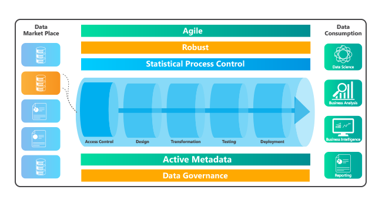

DataOps, a growing trend in data engineering
From the need to deliver quality data quickly and continuously, emerges DataOps, an approach that promises agile data operations for analytics. Speed, agility, automation and quality is what it aims to achieve to the highest degree.
With the exponential increase in data volumes at enterprises in the recent years, there has been an ever-growing need to leverage data and to streamline it faster for decision-making process. For enterprises to adapt to this new-normal and to become data-driven, the teams that consume and produce data must collaborate effectively and use data at each step of the process of making every business decision, regardless of whether the decision is big or small. To achieve robust and rapid insights, there should be a continuous and real-time delivery of data for analytics.
A faster and agile approach for the delivery of analytic-ready data requires accelerated data pipelines that can ingest, test and deploy data rapidly and can handle huge volumes of data quickly and continuously. DataOps is a principles-based practice that aims to achieve faster delivery of reliable, self-service data. The approach needs continuous monitoring of inputs, outputs and business logic. Speed, agility, metadata, automation and self-service culture are some of the building blocks of DataOps.
Self-Service and Collaboration
Self-service data is a form of Business Intelligence (BI), in which line-of-business professionals are enabled and encouraged to perform queries and generate reports in close collaboration with data analytics team.
When business users are empowered to explore data and test their hypothesis without much IT help, the practice naturally internalizes data in decision-making process. Business users can become innovative and propose new use cases for analytics. New analytics can be created quickly with the proposed use cases and businesses can see value in data analytics projects. This DataOps practice can quickly lead to incredible agility among data teams within organizations. The practice improves teamwork.
So, this shared mindset is important. However, for all this to be practical, the underlying data engineering process should be robust and agile enough to provide analytic-ready data quickly and continuously to its data consumers.

Metadata is the bedrock
Such faster and continuous delivery of quality data can be achieved with the support of metadata. Collecting extensive metadata is the key practice of DataOps. Maintaining consistency in metadata and capturing schema drifts is crucial. Metadata gives information about data. Once the collection process begins, it empowers data engineers to automate data processes and implementation of thousands of test cases in data pipelines. Continuous automated testing will improve data quality, and thereby trust in data analytics. Collection of descriptive, administrative and structural metadata would give us the essential information required to implement automation.
Automation to highest degree
DataOps is not feasible without automation. Highly automated and augmented data pipelines will only deliver faster data enablement. As data pipelines grow in number and size, the organizations need to set some standards to govern data at various stages in the pipelines. Standardization and repeatability are the core components of automation. The organization that implements automation is more impregnable to schema drifts and changes in data.
Building trust in data
Automated continuous testing is essential in building trust in data. Thousands of tests cases can be generated automatically for data pipelines and can be used to test data continuously. The tests are simple and additive. Whenever a change is made to data pipelines, test cases are created in DataOps. These tests are the early warning indicators of data quality issues.
As the complexity of data pipelines rise, the interconnections in the data elements also becomes complex and the pipelines are prone to more errors. Automated continuous testing can help boost confidence in data.
Further, statistical process controls ensure continuous monitoring of the data pipelines by analysing the output data. Any variations in data outputs can be identified, studied and appropriate action can be taken to resolve the issues.
All these practices of DataOps, if applied to the fullest, can reduce cycle time drastically allowing the business users to dive deep into the data without any waiting time. It also encourages collaborative working environment and promotes agility.